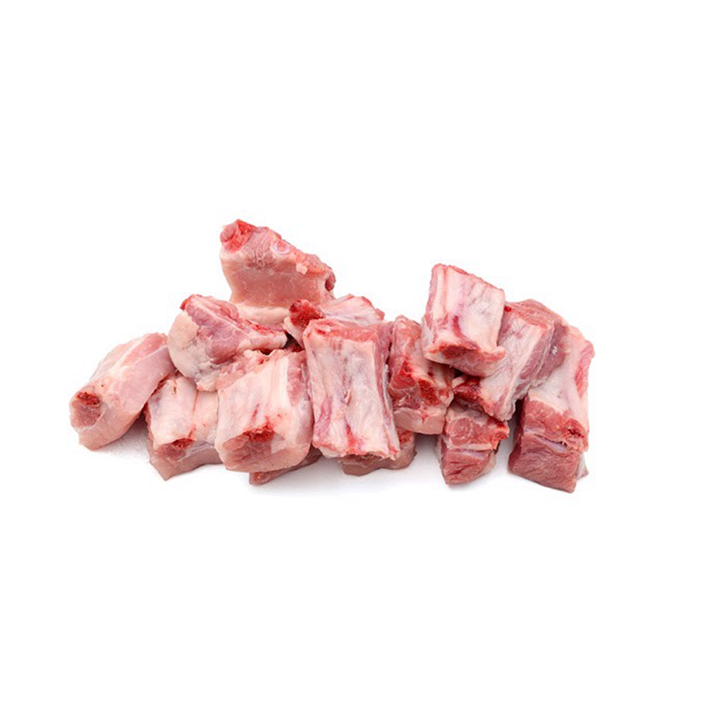
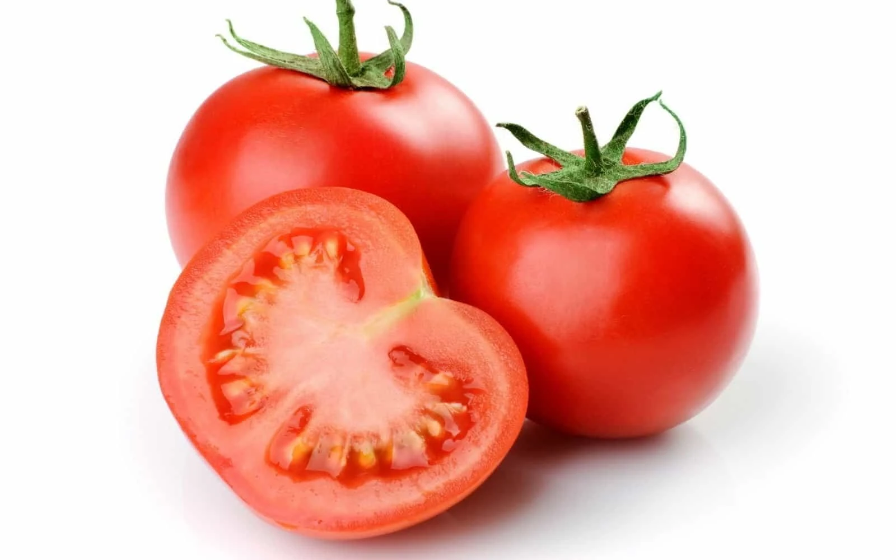
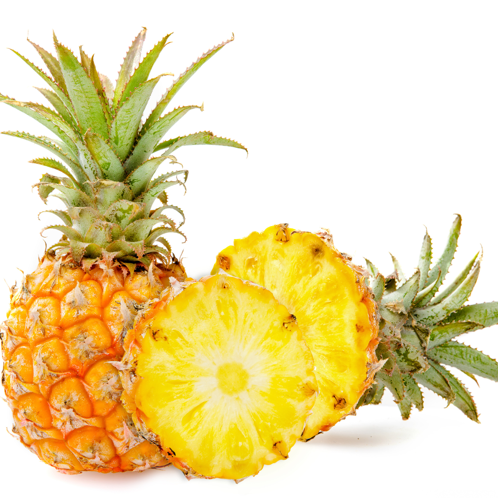
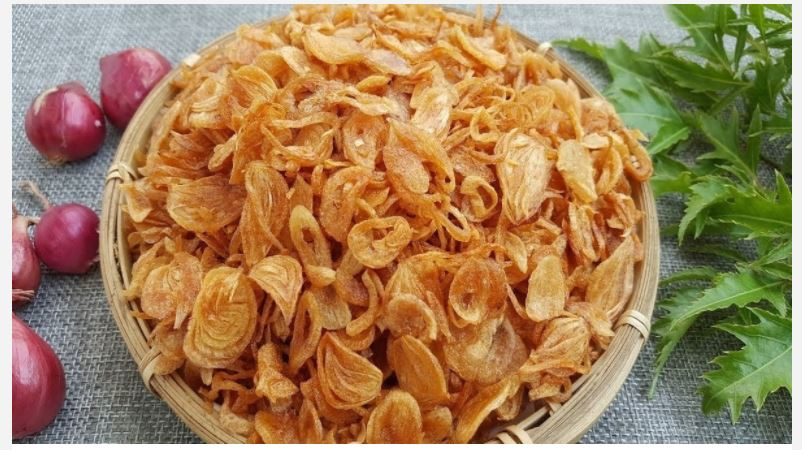
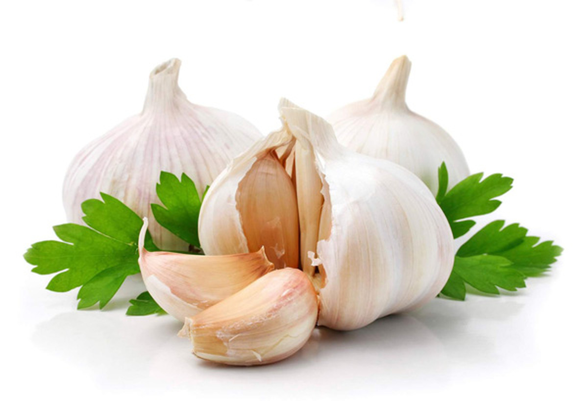
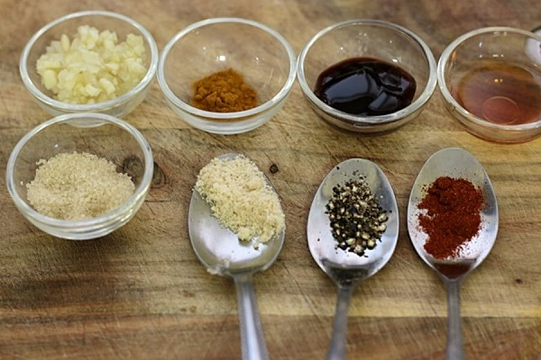

Nguyên Liệu

Sườn non
500g

Cà chua
2 quả

Dứa
1/2 quả

Hành khô
2 củ

Tỏi
3 tép

Gia vị
Nước mắm, đường, giấm, tiêu, muối
Cách Chế Biến
- Rửa sạch sườn, chặt miếng vừa ăn, rồi luộc sơ qua để khử mùi.
- Chiên sườn cho đến khi vàng đều, sau đó để riêng.
- Phi thơm hành, tỏi, sau đó cho cà chua và dứa vào xào chín.
- Thêm nước mắm, giấm, đường và gia vị vào xào để tạo nước sốt chua ngọt.
- Cho sườn vào chảo nước sốt, đảo đều và nấu trong khoảng 10 phút để sườn thấm đều gia vị.
- Chia ra đĩa và thưởng thức, có thể dùng kèm cơm trắng.